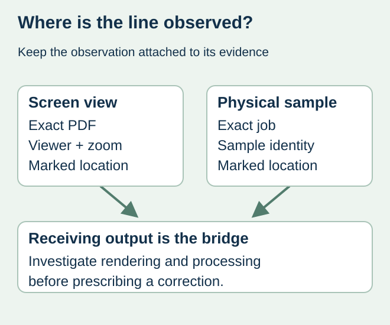
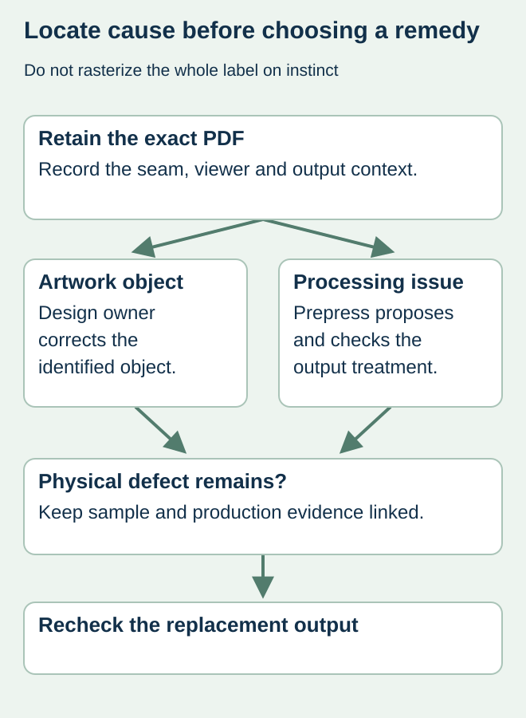

A thin pale line appears across a gradient in a food-label PDF. At another zoom level it changes or disappears. The buyer asks the designer to paint over it, although nobody has checked whether it belongs to the artwork, a display rendering boundary or the printed result.
Preserve the original file and compare the observation across identified rendering and output conditions before changing artwork. A screen seam is evidence of a screen observation. A line on an identified printed sample is different evidence and should be recorded separately.


What transparency processing can change
Adobe’s transparency-flattening documentation describes how transparent artwork can be divided into vector and raster regions. It discusses stitching artifacts at boundaries and the influence of output settings. That supports asking the receiving prepress team to investigate; it does not prove that every thin line is harmless or that flattening every label is the correct cure.
Identify the exact PDF export and whether processing has occurred. A screenshot sent through messaging may hide the file identity, zoom level and output context. Keep the affected page and location marked without altering the only copy of the production file.
Assemble a comparison record
| Observation | Record | What it can establish |
|---|---|---|
| Screen at one zoom | Viewer/version, zoom and location | The appearance in that view |
| Other views | Same file and location, changed view identified | Whether the display observation changes |
| Receiving output | Converter’s relevant processing and proof reference | Behavior in the proposed output route |
| Printed sample | Job/sample identity and marked line | Whether the observation is present on that physical sample |
| Correction | Authorized export or art change and new evidence | Whether the proposed remedy answers the identified cause |
This is an evidence plan, not an instruction to toggle arbitrary print settings. Let the designer and converter identify supported settings for their actual workflow. Do not import a generic flattening preset from another press or turn the entire label into a screenshot as an emergency fix.


Choose the correction after locating the cause
If the line is present as an actual artwork object, the design owner can correct that object and issue an identified replacement. If the observation is associated with rendering or transparency processing, the prepress team should propose and verify the appropriate output treatment. If a physical sample has a defect, preserve it and investigate the actual production route rather than dismissing it because the PDF looked clean.
In a hypothetical sauce-label review, a line at a transparency boundary changes with screen zoom while the relevant output evidence remains unresolved. The correct release state is an open technical question. It is too early either to guarantee invisible output or to authorize a design alteration that might damage the gradient.
Review the consequences of a changed export
A new export or transparency treatment can affect more than the marked seam. Recheck relevant text, fine elements, colors, technical separations and codes with their responsible reviewers. Preserve the approved source and record which production file replaces the earlier one.
Use proof-scope planning to choose evidence for the remaining uncertainty. A satisfactory result on one identified proof answers its stated scope; it is not an assurance about every downstream output arrangement.
Discuss the unresolved label requirement
Provide the controlled PDF, marked location, viewer and zoom details, receiving output evidence and any identified physical sample. Describe what is actually observed rather than prescribing rasterization. Prepare a label specification inquiry. The contact page opens an email draft and lists email or WhatsApp for attachments. Supply, proof options, testing, pricing and timing require project confirmation.